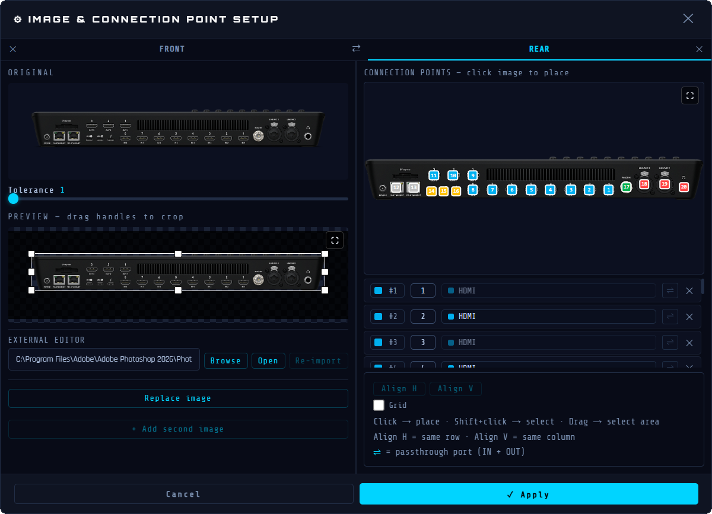
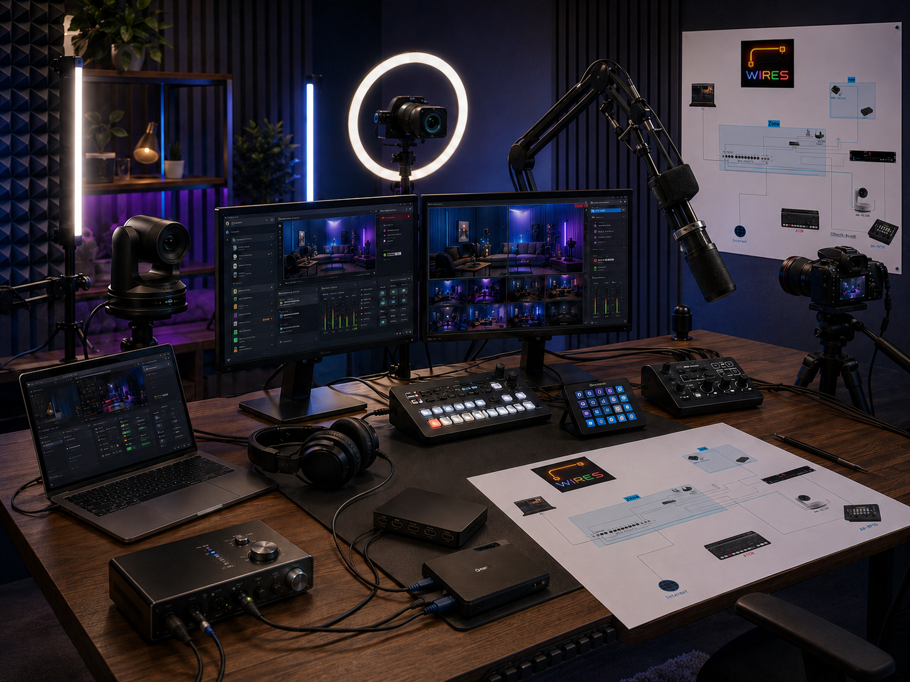
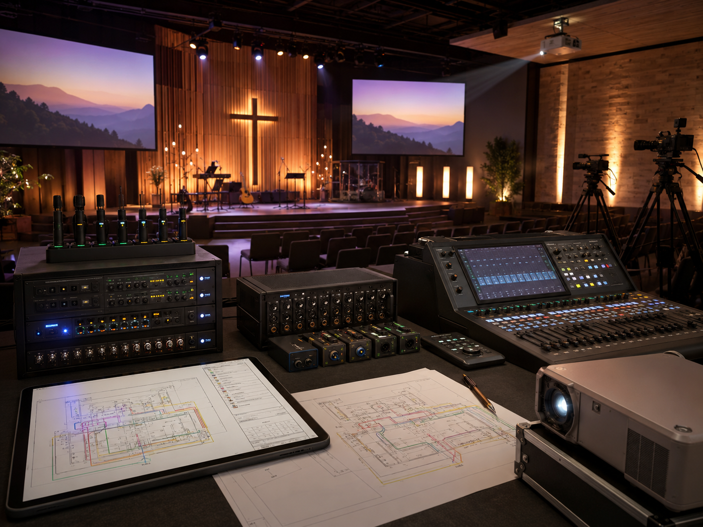
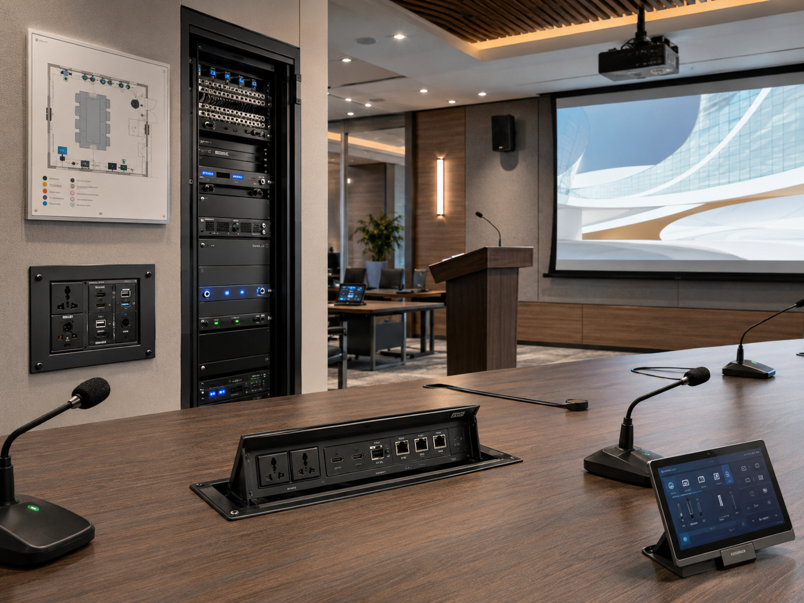
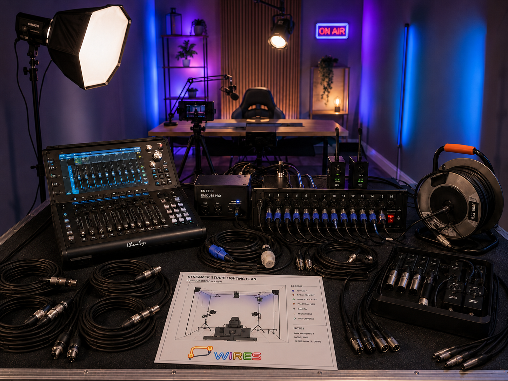
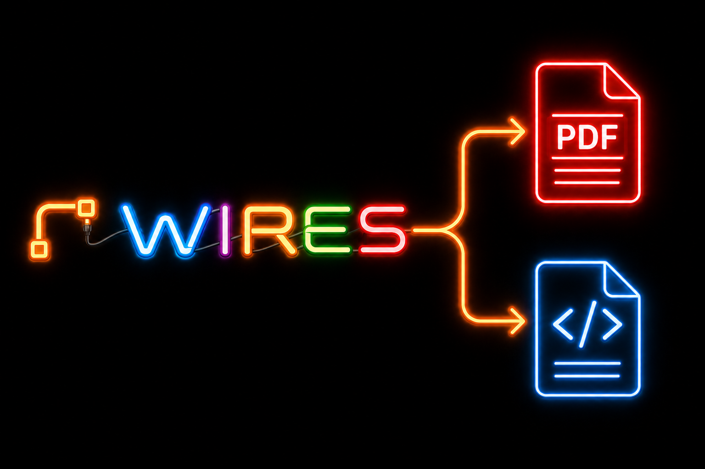

Real devices
Work with the equipment people recognize.
Import photos of cameras, switchers, interfaces, racks and screens. Crop them, clean them, and place connection points directly on the image so the plan stays readable for everyone.

Wires is built around the parts that matter in the real world: recognizable equipment, physical ports, readable cabling and complete signal paths.
Real devices
Import photos of cameras, switchers, interfaces, racks and screens. Crop them, clean them, and place connection points directly on the image so the plan stays readable for everyone.

Signal paths
Group cables into a route and animate the path from source to destination. It is easier to explain a chain, detect a break, or show how a signal moves through converters, switches and screens.
Control
Use zones, categories, filters, cable types, colors, labels and the minimap to organize larger installations without losing the technical context.
Main strengths
Use actual equipment photos instead of generic blocks.
Place inputs and outputs exactly where they are on the device.
Animate the complete signal path across multiple cable segments.
Create and style cable families for your own workflow.
Isolate a rack, a room, a camera chain or a cable type quickly.
Share a browser-ready HTML viewer, PDF documents and connection lists.
Work locally on Windows or macOS without depending on a cloud service.
Use Wires in English, French or Spanish.
Use cases

Prepare a clean map of cameras, capture cards, switchers, computers and screens before the live starts.

Keep volunteer teams aligned with a readable signal map for cameras, projectors, audio interfaces and control desks.

Document installed equipment, wall plates, racks, displays and converters so support stays simple.

Build reusable plans for events, rentals, training rooms and compact broadcast setups.
Video examples
These spaces are reserved for screen recordings from the actual program. The goal is to show Wires moving, not just describe it.
Create a cable, add it to a signal route, then launch the animation to follow the path.
Add a device, adjust its image, then place the ports directly on the equipment visual.

Export PDFs and an interactive HTML viewer with signal animation, device descriptions and signal-route details.
Contact
Join the community first, or send an email for license and support questions.